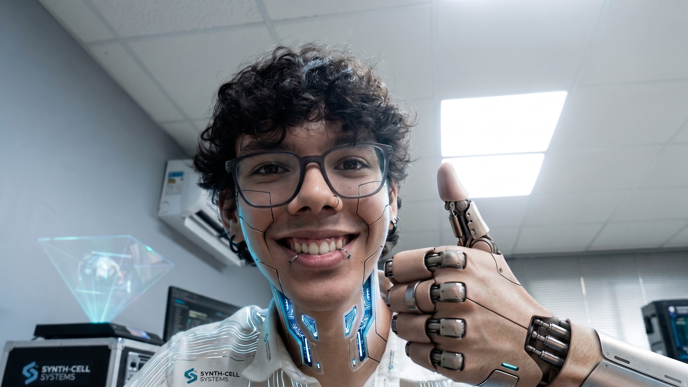

Lucas Andrade
Estudante de Eng. da Computação e IA Generativa
💼 NBsys
Assistente de DesenvolvimentoAtuação prática no desenvolvimento e manutenção de sistemas corporativos, resolução de tickets técnicos, refatoração de rotinas e suporte contínuo ao ciclo de vida de software da equipe.
🎓 Uninassau
Bacharelado em Engenharia da ComputaçãoGraduação com foco na convergência entre hardware e software. Envolve arquitetura computacional, circuitos lógicos, sistemas operacionais, algoritmos e estruturas de dados para engenharia de software de alta performance.
☕ Irede
Trilha Desenvolvimento JavaCapacitação intensiva no ecossistema Java moderno e desenvolvimento backend robusto. Envolve Programação Orientada a Objetos (POO), construção e consumo de APIs RESTful, Spring Boot e persistência com JPA/Hibernate.
🤖 Geração Tech 4.0
Curso de IA GenerativaImersão prática na construção de aplicações modernas com IA. Técnicas de engenharia de prompt avançada, arquiteturas RAG (Retrieval-Augmented Generation), vector databases, orquestração com LangChain e desenvolvimento de agentes inteligentes.